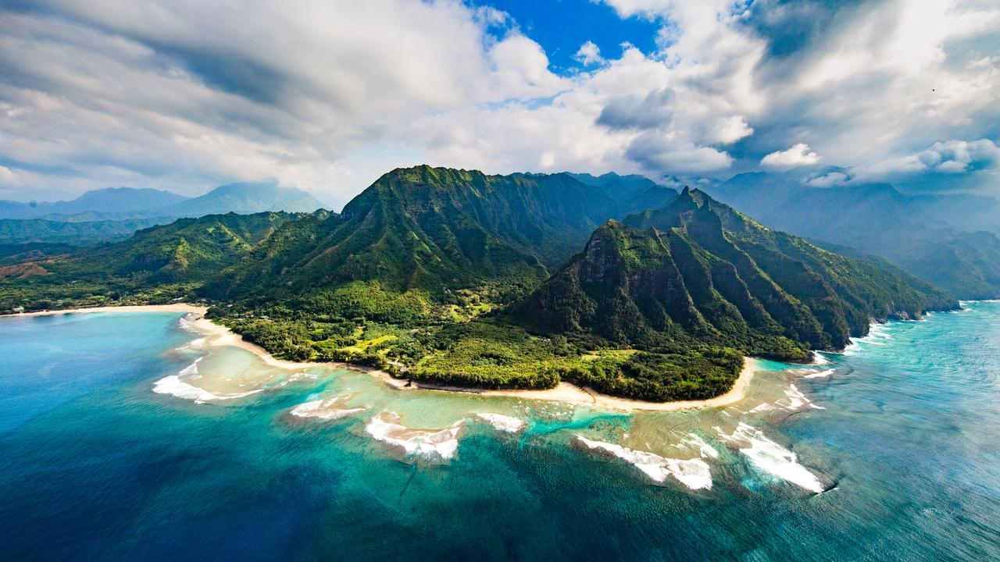

Travel
Hawaii
Geographical Location
Hawaii is an archipelago located in the central Pacific Ocean, approximately 2,400 miles southwest of California.
About this place:
Hawaii, a tropical paradise in the heart of the Pacific, consists of a chain of enchanting islands known for their diverse landscapes, warm hospitality, and unique Polynesian culture.
From the volcanic wonders of the Big Island to the lush rainforests of Kauai, each island boasts its own distinct charm. Visitors are drawn to Hawaii's pristine beaches, world-class surfing, and the spirit of "Aloha" that permeates the islands.
Tokyo

Geographical Location
Tokyo is situated on the eastern coast of the island of Honshu, Japan.
About this place:
Tokyo, the vibrant capital of Japan, stands as a modern metropolis seamlessly blending traditional culture with cutting-edge technology.
Towering skyscrapers coexist with historic temples and lush gardens, creating a captivating juxtaposition. Renowned for its bustling energy, Tokyo offers a diverse range of experiences, from high-tech districts like Akihabara to the serene beauty of Ueno Park.
The city's unique fusion of the old and the new makes it a captivating destination for travelers seeking a rich cultural tapestry intertwined with modern urban living.
The Bahamas is an archipelago situated in the Atlantic Ocean, southeast of Florida in the United States.
The Bahamas, an idyllic collection of islands scattered across the turquoise waters of the Atlantic, is synonymous with sun-kissed beaches, crystal-clear seas, and a laid-back island lifestyle.
From the bustling markets of Nassau to the serene cays with powdery sands, the Bahamas offer a tropical escape like no other. Rich in marine life and vibrant coral reefs, it's a haven for snorkelers and divers.
The vibrant colors of the architecture, the rhythmic beats of Junkanoo music, and the welcoming smiles of the locals define the charming allure of this Caribbean paradise.